Digitalizamos el avance real y la producción diaria de los subcontratos del proyecto para identificar desviaciones a la ruta crítica, identificar incidencias, realizar cuantificaciones y libros de materiales, especificaciones, obtener métricas de avance y asegurar el cierre de los subcontratos con nuestro sistema Asbuilt. Realizamos registros de avance y captura de la realidad para el sitio con nuestras tecnologías de captura (drones, láser scanning y cámaras 360°) exclusivamente por contrato en proyecto y por especialidad.


Cuatro productos que conforman el servicio BIM en Obra.
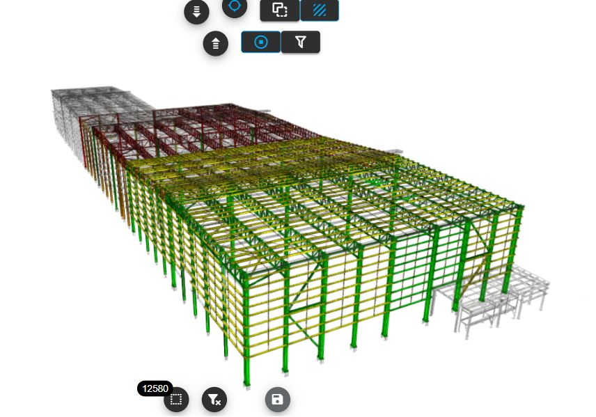
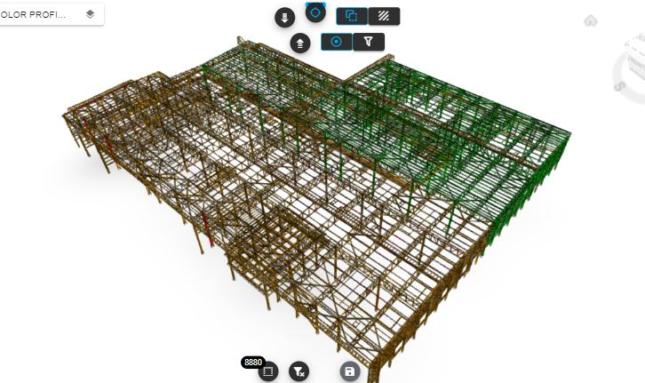
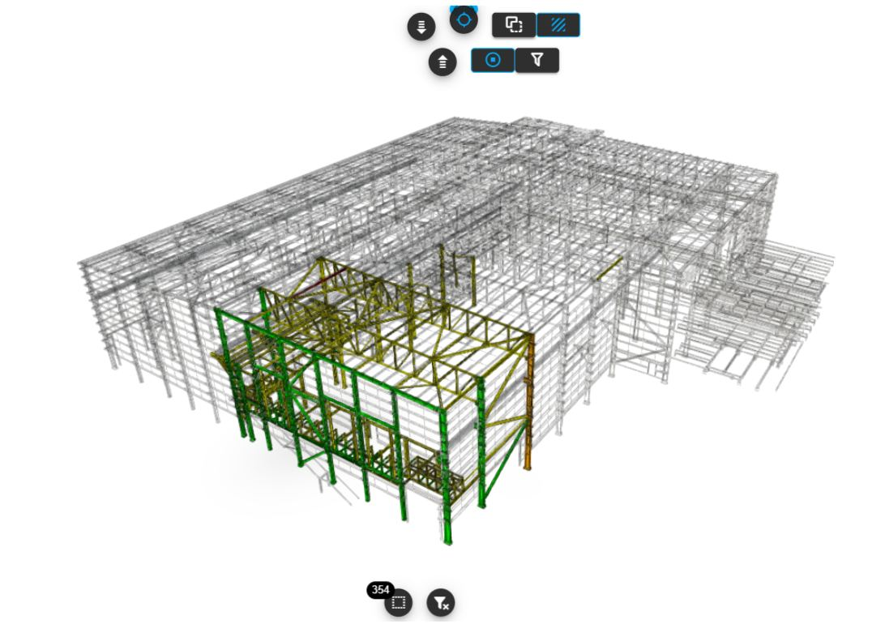
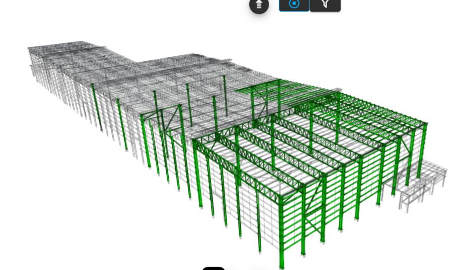
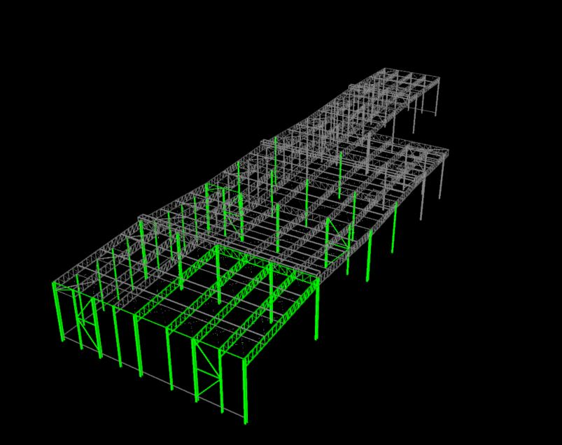
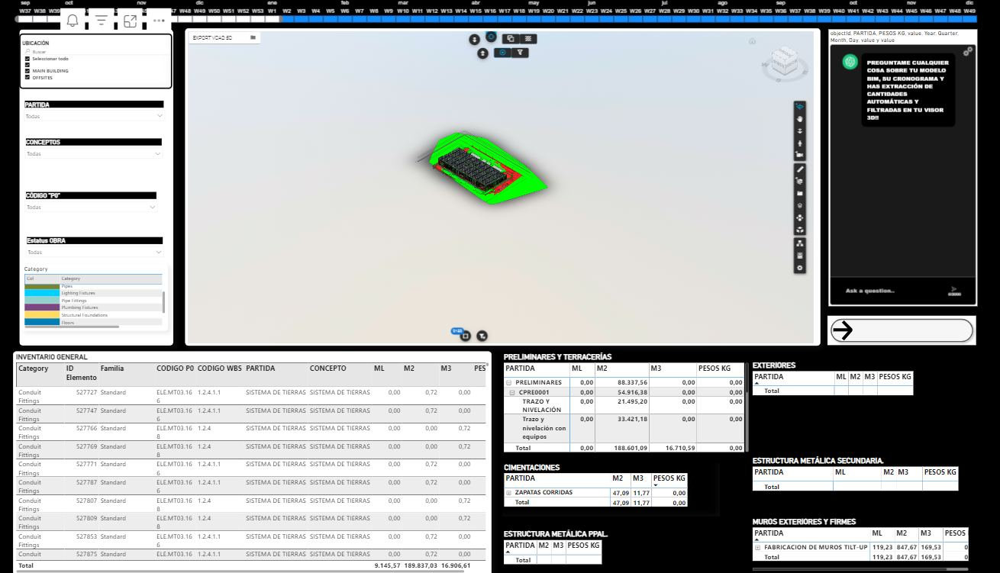
Registramos en los modelos de especialidades los estatus de cada objeto y elemento constructivo conforme el avance diario de los trabajos en obra. Obtenemos métricas y desvíos conforme a programas de ejecución.
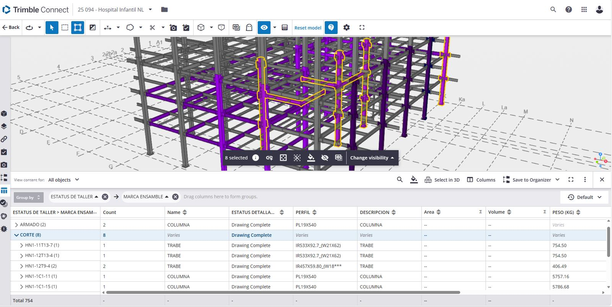
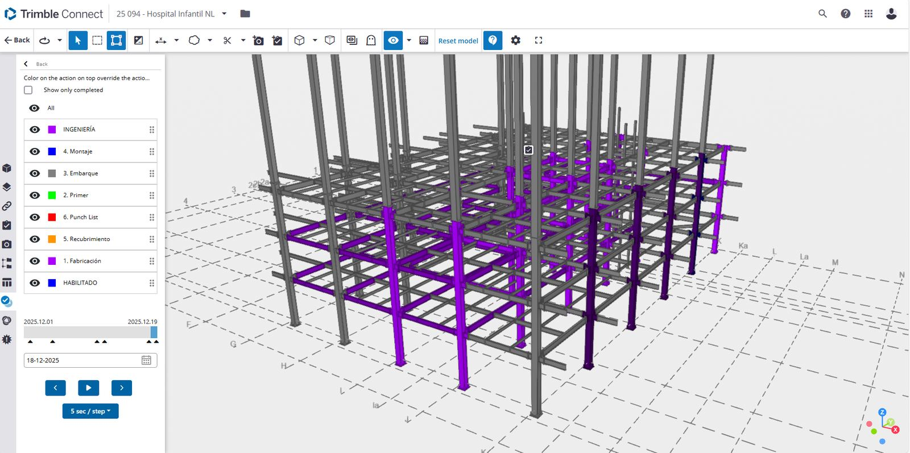
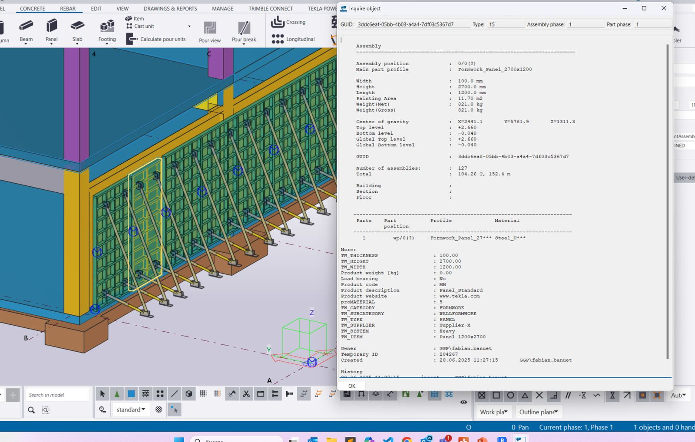

Segmentamos y organizamos la información de los modelos de especialidades para generar reportes de cantidades por avance, para comparar volúmenes vendidos e identificar desvíos a los presupuestos de venta y de control. Aseguramos cantidades precisas para órdenes de compra, cotizaciones y catálogos de conceptos.
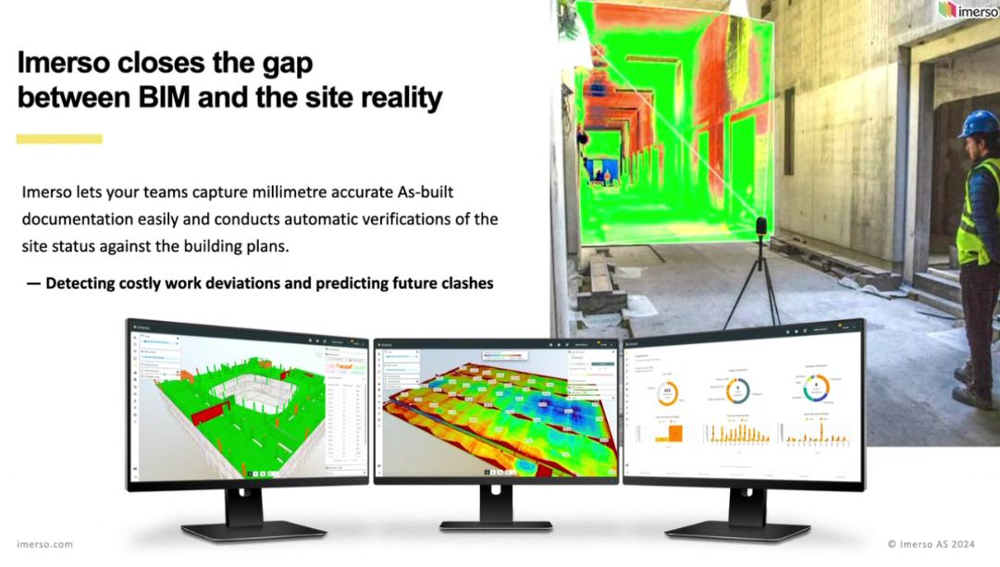
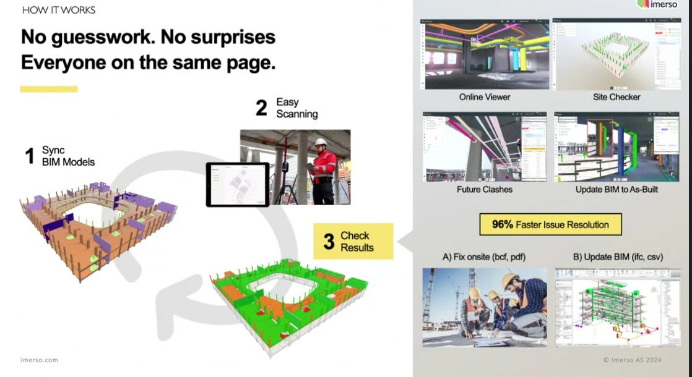
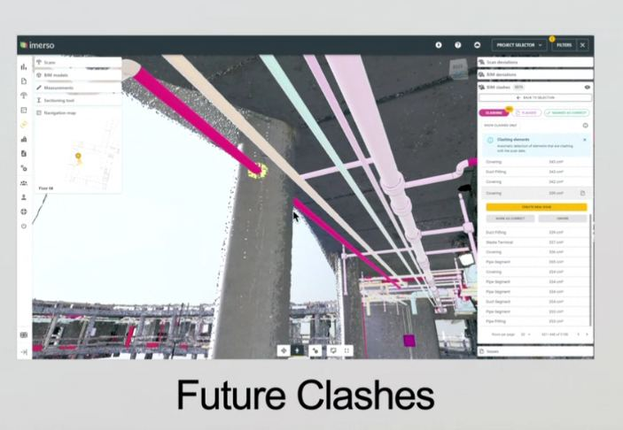
Aseguramos la trazabilidad y el correcto seguimiento de los cambios en sitio, órdenes de cambio, logística e incidencias en obra, así como el control de boletines y RFIs. Utilizamos la plataforma Autodesk Construction Cloud (Build) para el seguimiento y administración de la información de construcción.
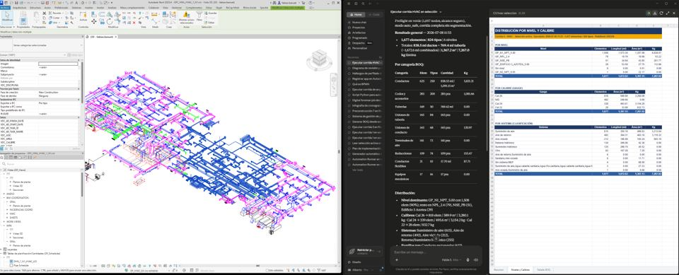
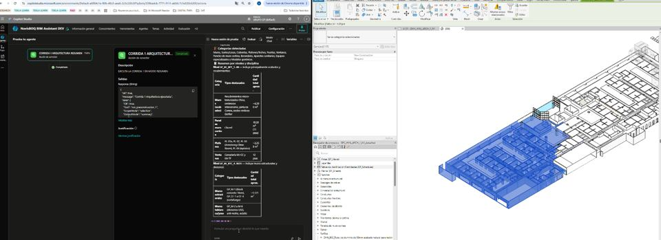
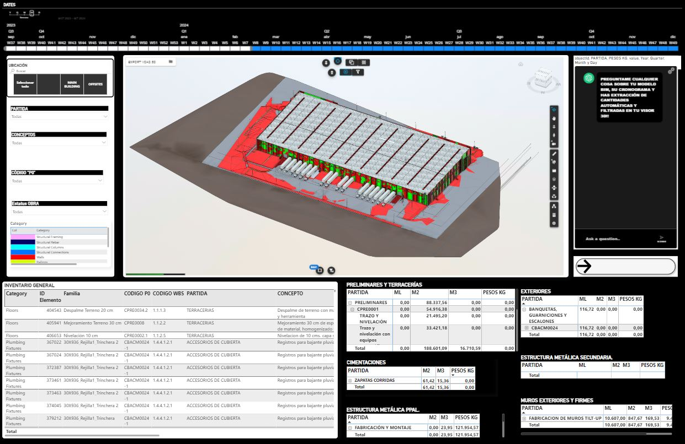
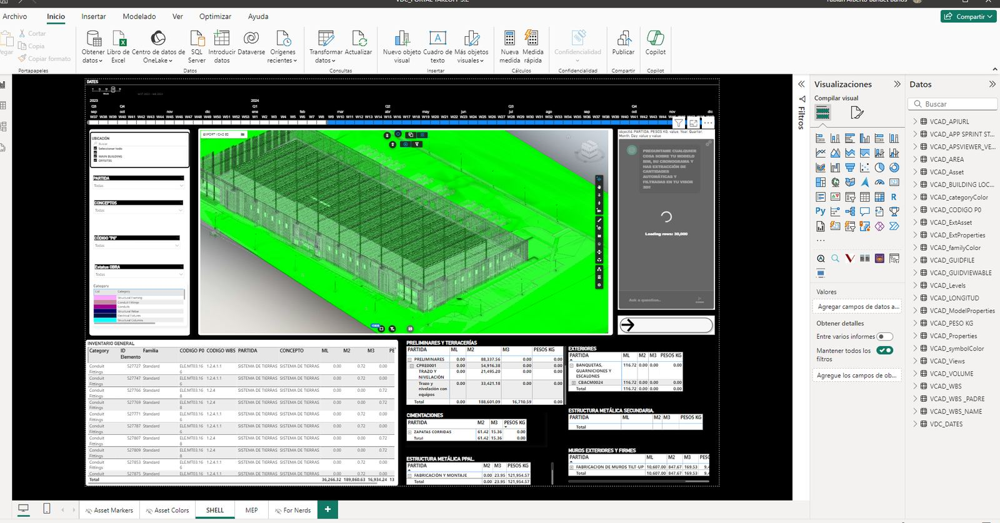
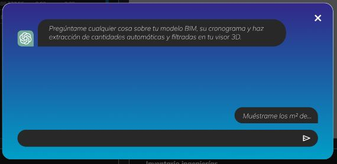
Desplegamos nuestro agente de inteligencia artificial para cuantificaciones, reportes, identificación de incidencias, control de calidad, insight en tiempo real y una mejor toma de decisiones basadas en datos.
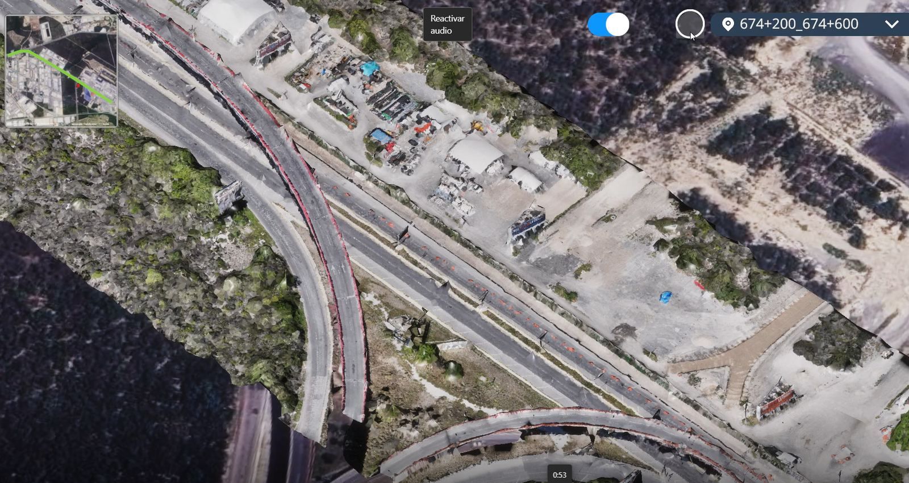
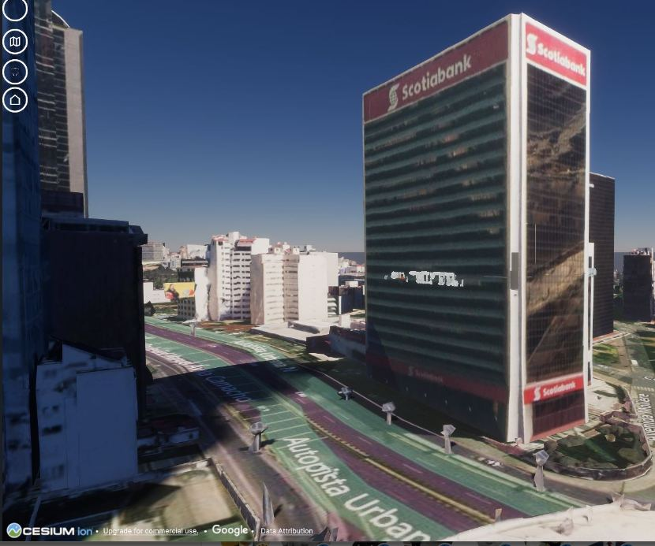
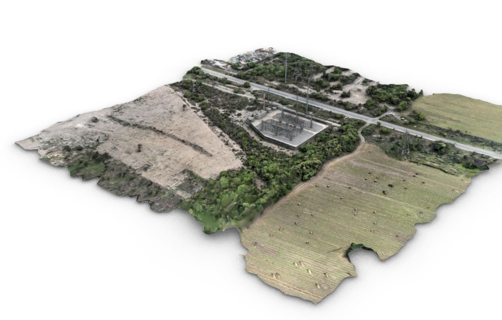
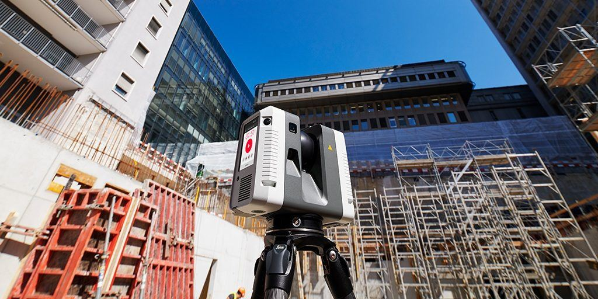
Desplegamos drones, utilizamos escáneres láser y proporcionamos una cuadrilla de inspección con cámaras 360° para registrar todo el avance de la obra digitalmente.
Agenda un diagnóstico inicial sin costo y define el alcance con nosotros.